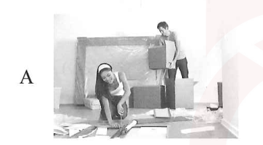
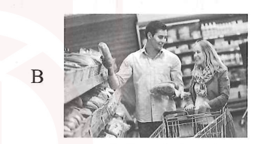
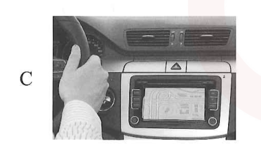
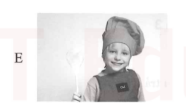
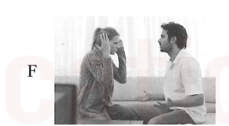

Cuối tuần bạn có dự định gì? (What's your plan for the weekend?)
💡 Cách học: Rê chuột (hoặc chạm trên điện thoại) vào bất kỳ chữ Hán nào để tra Pinyin và nghĩa tiếng Việt; chữ có dấu chấm cam • là chữ đa âm tự (bấm/giữ để xem toàn bộ các âm khác); bấm "👁 Dịch cả câu" khi cần kiểm tra lại khả năng hiểu nghĩa của mình.
第一部分: 第 1 - 5 题
5 câu đối thoại & tranh minh họa
Yêu cầu: 听对话，选择与对话内容一致的图片 (Nghe đối thoại, chọn tranh tương ứng A - F):

Hình A: Chuyển nhà (搬家)

Hình B: Mua bánh mì (买面包)

Hình C: Bản đồ điện tử (电子地图)
Hình D (Ví dụ): Gọi điện thoại (打电话)

Hình E: Nấu cơm (做晚饭)

Hình F: Xem phim / Không vui (看电影)
Ví dụ
男:喂，请问张经理在吗？Wèi, qǐngwèn Zhāng jīnglǐ zài ma?Alo, xin hỏi giám đốc Trương có ở đó không?
女:他正在开会，您半个小时以后再打，好吗？Tā zhèngzài kāihuì, nín bàn ge xiǎoshí yǐhòu zài dǎ, hǎo ma?Ông ấy đang họp, khoảng nửa tiếng nữa bạn gọi lại được không?
• Đáp án đúng: D (Tranh D: Nhân viên nghe điện thoại)
Câu 1
男:你怎么又不高兴了？Nǐ zěnme yòu bù gāoxìng le?Sao em lại không vui rồi?
女:你工作一直忙，一次电影都没跟我一起看过。Nǐ gōngzuò yìzhí máng, yí cì diànyǐng dōu méi gēn wǒ yìqǐ kàn guo.Anh lúc nào cũng bận công việc, chưa từng cùng em đi xem phim lần nào cả.
• Đáp án đúng: F (Tranh F: Hai người ngồi giận dỗi không vui)
Câu 2
男:喂，您好，请问是搬家公司吗？我们要搬家。Wèi, nín hǎo, qǐngwèn shì bānjiā gōngsī ma? Wǒmen yào bānjiā.Alo, xin chào, xin hỏi có phải công ty chuyển nhà không ạ? Chúng tôi cần chuyển nhà.
女:请问您打算什么时候搬？Qǐngwèn nín dǎsuàn shénme shíhou bān?Xin hỏi anh dự định khi nào chuyển ạ?
• Đáp án đúng: A (Tranh A: Đang đóng thùng chuyển nhà)
女:是啊，那我们多买几个吧！Shì a, nà wǒmen duō mǎi jǐ ge ba!Đúng thế, vậy chúng ta mua nhiều thêm mấy cái đi!
• Đáp án đúng: B (Tranh B: Hai người chọn bánh mì trong siêu thị)
Câu 5
女:这是哪儿啊？你开错了吧？我们怎么回家啊？Zhè shì nǎr a? Nǐ kāi cuò le ba? Wǒmen zěnme huí jiā a?Đây là đâu thế này? Anh lái nhầm đường rồi à? Chúng mình về nhà bằng cách nào đây?
男:别着急，车上有电子地图。Bié zháojí, chē shang yǒu diànzǐ dìtú.Đừng sốt ruột, trên xe có bản đồ điện tử mà.
• Đáp án đúng: C (Tranh C: Người lái xe có màn hình bản đồ điện tử)
第二部分: 第 6 - 10 题
5 câu phán đoán đúng sai
Câu 6
这个电影一点儿意思也没有，我们看书吧。Zhège diànyǐng yìdiǎnr yìsi yě méiyǒu, wǒmen kàn shū ba.Bộ phim này chẳng có tí thú vị nào cả, chúng ta đọc sách đi.
☆ 他不喜欢这个电影。 [ √ ĐÚNG ] (Anh ấy không thích bộ phim này)
Câu 7
你怎么还没准备好？快点儿吧，没时间了。Nǐ zěnme hái méi zhǔnbèi hǎo? Kuài diǎnr ba, méi shíjiān le.Sao cậu vẫn chưa chuẩn bị xong? Nhanh lên nào, không còn thời gian nữa rồi.
☆ 他一点儿也不着急。 [ × SAI ] (Cậu ấy chẳng vội vàng chút nào → Sai, người nói đang rất vội và giục giã)
Câu 8
明天的考试我都复习好了，没问题。Míngtiān de kǎoshì wǒ dōu fùxí hǎo le, méi wèntí.Kỳ thi ngày mai tôi đã ôn tập kĩ càng cả rồi, không vấn đề gì.
☆ 他考试考得很好。 [ × SAI ] (Anh ấy thi rất tốt → Sai, ngày mai mới thi nên chưa có kết quả)
Câu 9
去南方旅游？去北方旅游？去哪儿旅游好呢？Qù nánfāng lǚyóu? Qù běifāng lǚyóu? Qù nǎr lǚyóu hǎo ne?Đi du lịch phương Nam? Đi du lịch phương Bắc? Đi đâu du lịch thì hay nhỉ?
☆ 他还没想好去哪儿旅游。 [ √ ĐÚNG ] (Anh ấy vẫn chưa quyết định được đi du lịch ở đâu)
Câu 10
家里一个鸡蛋也没有，明天早上吃什么啊？Jiā li yí ge jīdàn yě méiyǒu, míngtiān zǎoshang chī shénme a?Ở nhà một quả trứng cũng không còn, sáng mai ăn món gì đây?
☆ 家里还有很多鸡蛋。 [ × SAI ] (Trong nhà vẫn còn rất nhiều trứng → Sai, không còn quả nào)
问:男的打算做什么？Wèn: Nán de dǎsuàn zuò shénme?Hỏi: Người nam dự định làm gì?
• Đáp án đúng: A 送朋友 (Tiễn bạn bè)
Câu 12
男:下个月我们去南方旅游，怎么样？Xià ge yuè wǒmen qù nánfāng lǚyóu, zěnmeyàng?Tháng sau chúng ta đi du lịch miền Nam nhé, được không?
女:南方我还一次都没去过呢，一直想去看看。Nánfāng wǒ hái yí cì dōu méi qù guo ne, yìzhí xiǎng qù kànkan.Miền Nam em còn chưa từng đi lần nào, vẫn luôn muốn đi tham quan thử.
问:关于女的，可以知道什么？Wèn: Guānyú nǚ de, kěyǐ zhīdào shénme?Hỏi: Về người nữ, có thể biết được điều gì?
• Đáp án đúng: C 很想去南方 (没去过南方)
Câu 13
女:大雨，你快来帮我一下。Dàyǔ, nǐ kuài lái bāng wǒ yíxià.Đại Vũ, cậu mau lại đây giúp tôi một tay với.
男:这么多东西，你怎么一个人搬？你儿子去哪儿了？Zhème duō dōngxi, nǐ zěnme yí ge rén bān? Nǐ érzi qù nǎr le?Nhiều đồ thế này, sao chị lại bê một mình? Con trai chị đi đâu rồi?
问:女的请男的做什么？Wèn: Nǚ de qǐng nán de zuò shénme?Hỏi: Người nữ nhờ người nam làm gì?
• Đáp án đúng: B 搬东西 (帮忙)
Câu 14
男:别买票了，一个好看的电影都没有。Bié mǎi piào le, yí ge hǎokàn de diànyǐng dōu méiyǒu.Đừng mua vé nữa, chẳng có bộ phim nào hay cả.
女:那看看明天的吧。Nà kànkan míngtiān de ba.Vậy xem phim ngày mai xem sao.
问:他们为什么没买票？Wèn: Tāmen wèishénme méi mǎi piào?Hỏi: Tại sao họ không mua vé?
• Đáp án đúng: B 没有好看的电影
Câu 15
女:这是哪儿啊？我没带地图，我们问问那边的游客吧。Zhè shì nǎr a? Wǒ méi dài dìtú, wǒmen wènwen nàbian de yóukè ba.Đây là đâu thế này? Em không mang bản đồ, chúng mình hỏi khách du lịch bên kia nhé.
男:不用，我就是地图，你问我吧。Búyòng, wǒ jiù shì dìtú, nǐ wèn wǒ ba.Không cần, anh chính là bản đồ đây, em hỏi anh này.
问:男的是什么意思？Wèn: Nán de shì shénme yìsi?Hỏi: Người nam có ý gì?
• Đáp án đúng: C 他知道这是哪儿 (不用看地图)
第四部分: 第 16 - 20 题
5 câu đối thoại dài
Câu 16
女:小周，你们搬家了？Xiǎo Zhōu, nǐmen bānjiā le?Tiểu Chu, nhà bạn chuyển nhà rồi à?
男:是啊，从公司南边搬到了医院北边。Shì a, cóng gōngsī nánbian bān dào le yīyuàn běibian.Đúng vậy, từ phía nam công ty chuyển tới phía bắc bệnh viện rồi.
女:是吗？那你们离白雪家很近吧？Shì ma? Nà nǐmen lí Bái Xuě jiā hěn jìn ba?Thật à? Vậy các bạn cách nhà Bạch Tuyết gần lắm nhỉ?
男:对，他们家搬到了医院南边。Duì, tāmen jiā bān dào le yīyuàn nánbian.Đúng thế, nhà họ chuyển tới phía nam bệnh viện.
问:现在小周家在哪儿？Wèn: Xiànzài Xiǎo Zhōu jiā zài nǎr?Hỏi: Bây giờ nhà Tiểu Chu ở đâu?
• Đáp án đúng: B 医院北边
Câu 17
男:这是你的小猫吗？真漂亮！Zhè shì nǐ de xiǎomāo ma? Zhēn piàoliang!Đây là mèo con của bạn à? Đẹp thật đấy!
女:谢谢！Xièxie!Cảm ơn bạn!
男:它叫什么名字？Tā jiào shénme míngzi?Nó tên là gì thế?
女:我还没想好叫它什么呢。Wǒ hái méi xiǎng hǎo jiào tā shénme ne.Mình vẫn chưa nghĩ ra nên đặt tên cho nó là gì.
问:女的的猫叫什么？Wèn: Nǚ de de māo jiào shénme?Hỏi: Con mèo của người nữ tên là gì?
• Đáp án đúng: C 还没有名字 (还没想好)
Câu 18
女:你帮了我这么多，谢谢你！Nǐ bāng le wǒ zhème duō, xièxie nǐ!Cậu đã giúp tôi nhiều như vậy, cảm ơn cậu nhé!
男:不客气。Bú kèqi.Không có gì đâu.
女:晚上我请你吃饭，就去公司南边的那家饭馆。Wǎnshang wǒ qǐng nǐ chīfàn, jiù qù gōngsī nánbian de nà jiā fànguǎn.Tối nay tôi mời cậu ăn cơm, tới quán ăn ở phía nam công ty nhé.
男:好啊，我还一次都没去过呢。Hǎo a, wǒ hái yí cì dōu méi qù guo ne.Được thôi, mình còn chưa từng đến đó lần nào cả.
问:关于女的，可以知道什么？Wèn: Guānyú nǚ de, kěyǐ zhīdào shénme?Hỏi: Về người nữ, có thể biết được điều gì?
• Đáp án đúng: A 晚上请男的吃饭
Câu 19
男:你怎么了一天都不高兴？Nǐ zěnme le yì tiān dōu bù gāoxìng?Cậu sao thế, cả ngày hôm nay đều không vui?
女:明天就要考试了，我一点儿都没复习呢。Míngtiān jiù yào kǎoshì le, wǒ yìdiǎnr dōu méi fùxí ne.Ngày mai phải thi rồi, mình chưa ôn tập được chút nào cả.
男:别着急，你学得好，考试没问题。Bié zháojí, nǐ xué de hǎo, kǎoshì méi wèntí.Đừng lo lắng, cậu học giỏi mà, thi cử không thành vấn đề đâu.
女:希望这次能考好。Xīwàng zhè cì néng kǎo hǎo.Hy vọng lần này thi tốt.
问:关于女的，可以知道什么？Wèn: Guānyú nǚ de, kěyǐ zhīdào shénme?Hỏi: Về người nữ, có thể biết được điều gì?
• Đáp án đúng: C 还没复习 (明天要考试)
Câu 20
女:你桌子上有那么多书啊！Nǐ zhuōzi shang yǒu nàme duō shū a!Trên bàn của bạn có nhiều sách thế!
男:对，都是我买的。Duì, dōu shì wǒ mǎi de.Đúng vậy, đều do mình mua đấy.
女:你真爱读书。哪本最有意思？给我介绍一下吧。Nǐ zhēn ài dú shū. Nǎ běn zuì yǒu yìsi? Gěi wǒ jièshào yíxià ba.Bạn chăm đọc sách thật đấy. Cuốn nào hay nhất thế? Giới thiệu cho mình một chút đi.
男:我爱买书，但是这些书我一本都没读过。Wǒ ài mǎi shū, dànshì zhèxiē shū wǒ yì běn dōu méi dú guo.Mình thích mua sách thôi, chứ những cuốn này mình chưa từng đọc một cuốn nào cả.
问:关于男的，可以知道什么？Wèn: Guānyú nán de, kěyǐ zhīdào shénme?Hỏi: Về người nam, có thể biết được điều gì?
• Đáp án đúng: A 爱买书 (没读过这些书)
第一部分: 第 21 - 25 题
Chọn câu đối ứng phù hợp (A - F)
💡 Hướng dẫn: Bấm vào câu lựa chọn (A - F) phía dưới rồi bấm Kiểm tra đáp án. Bấm "👁 Dịch cả câu" ở cuối câu để xem toàn bộ câu dịch tiếng Việt.
📋 CÁC CÂU LỰA CHỌN (A - F):
A.不是，我一直在这家医院工作。
Bú shì, wǒ yìzhí zài zhè jiā yīyuàn gōngzuò.
Không phải, tôi vẫn luôn làm việc ở bệnh viện này.
B.对不起，周老师现在不在。
Duìbuqǐ, Zhōu lǎoshī xiànzài bú zài.
Xin lỗi, thầy Chu hiện tại không có ở đây.
C.今天学校里一个人都没有，大家都去哪儿了？
Jīntiān xuéxiào li yí ge rén dōu méiyǒu, dàjiā dōu qù nǎr le?
Hôm nay trong trường một người cũng không có, mọi người đi đâu hết rồi?
Đương nhiên rồi. Chúng ta trước tiên đi xe buýt, sau đó chuyển sang tàu điện ngầm.
F.可能是工作太累，生病了。
Kěnéng shì gōngzuò tài lèi, shēngbìng le.
Có lẽ là do công việc quá mệt, nên bị ốm rồi.
Ví dụ
你知道怎么去那儿吗？
Câu 21
你怎么了？今天一点儿东西都没吃。
Chọn câu đối ứng:
A
B
C
D
E
F
Câu 22
今天是周末，你去学校做什么？
Chọn câu đối ứng:
A
B
C
D
E
F
Câu 23
好啊，哪天？
Chọn câu đối ứng:
A
B
C
D
E
F
Câu 24
你是新来的医生吗？
Chọn câu đối ứng:
A
B
C
D
E
F
Câu 25
那我明天再来吧，谢谢。
Chọn câu đối ứng:
A
B
C
D
E
F
第二部分: 第 26 - 30 题
Điền từ thích hợp vào chỗ trống (A - F)
📋 TỪ NGỮ CHO SẴN (A - F):
A.一直
yìzhí
luôn luôn, suốt
B.周末
zhōumò
cuối tuần
C.带
dài
mang theo, đem theo
D.搬
bān
dọn, dời, chuyển
E.声音
shēngyīn
âm thanh, tiếng, giọng
F.面包
miànbāo
bánh mì
Ví dụ
她说话的 ( E 声音 ) 多好听啊！
Câu 26
这几年我 ( ? ) 忙工作，没时间去旅游。
Chọn từ điền vào chỗ trống:
A一直
B周末
C带
D搬
E声音
F面包
Câu 27
你 ( ? ) 家的时候，我来帮你吧。
Chọn từ điền vào chỗ trống:
A一直
B周末
C带
D搬
E声音
F面包
Câu 28
这个 ( ? ) 很不错，是你买的吗？
Chọn từ điền vào chỗ trống:
A一直
B周末
C带
D搬
E声音
F面包
Câu 29
A: 这件新衣服是什么时候买的？ B: 上 ( ? )，我妹妹跟我一起去买的。
Chọn từ điền vào chỗ trống:
A一直
B周末
C带
D搬
E声音
F面包
Câu 30
A: 现在北方很冷，多 ( ? ) 几件衣服吧。 B: 我已经准备好了。
Chọn từ điền vào chỗ trống:
A一直
B周末
C带
D搬
E声音
F面包
第三部分: 第 31 - 35 题
Đọc đoạn văn và chọn câu trả lời đúng (A, B, C)
💡 Lưu ý: Các lựa chọn A, B, C mặc định chỉ hiển thị chữ Hán. Bạn có thể rê chuột vào từng chữ để tra từ điển, hoặc bấm "👁 Dịch các lựa chọn" khi cần kiểm tra nghĩa.
第 36 - 40 题: Sắp xếp các từ ngữ để tạo thành câu hoàn chỉnh
Câu 36
面包 / 一个 / 商店里 / 没有 / 也
商店里一个面包也没有。
Shāngdiàn li yí ge miànbāo yě méiyǒu.
Trong cửa hàng một chiếc bánh mì cũng không có.
Câu 37
想 / 好 / 吃什么 / 还没 / 我
我还没想好吃什么。
Wǒ hái méi xiǎng hǎo chī shénme.
Tôi vẫn chưa nghĩ ra ăn món gì.
Câu 38
没下 / 雪 / 一点儿 / 都 / 今年
今年一点儿雪都没下。
Jīnnián yìdiǎnr xuě dōu méi xià.
Năm nay một chút tuyết cũng không rơi.
Câu 39
也 / 咖啡 / 一杯 / 没喝 / 今天下午 / 我
今天下午我一杯咖啡也没喝。
Jīntiān xiàwǔ wǒ yì bēi kāfēi yě méi hē.
Chiều hôm nay tôi một cốc cà phê cũng chưa uống.
Câu 40
好 / 水果 / 吗 / 洗 / 你 / 了
你洗好水果了吗？
Nǐ xǐ hǎo shuǐguǒ le ma?
Bạn đã rửa xong hoa quả chưa?
第 41 - 45 题: Căn cứ phiên âm để điền chữ Hán
41. 下午我一 ( 直 : zhí ) 在房间里看书。
42. 我家在学校的 ( 北 : běi ) 边。
43. 周 ( 末 : mò ) 我请你去跳舞，怎么样？
44. 我想 ( 跟 : gēn ) 你们一起去打篮球，可以吗？
45. 我们明天就要 ( 搬 : bān ) 家了。
生词: 15 Từ mới trong Sách Giáo Khoa (Trang 18 - 19)
Nội dung chuẩn gốc từ HSK 3 Sách giáo khoa
Toàn bộ 15 từ vựng mới chính thức của Bài 1 kèm từ loại và dịch nghĩa tiếng Việt:
STT
Chữ Hán
Pinyin
Từ loại
Ý nghĩa tiếng Việt
1
周末
zhōumò
danh từ
cuối tuần
2
打算
dǎsuàn
danh từ / động từ
kế hoạch; dự định
3
啊
a
trợ từ
được dùng ở cuối câu để khẳng định hay biện minh cho điều gì
4
跟
gēn
giới từ
cùng, với
5
一直
yìzhí
phó từ
suốt, liên tục, luôn luôn
6
游戏
yóuxì
danh từ
trò chơi
7
作业
zuòyè
danh từ
bài tập về nhà
8
着急
zháojí
tính từ
lo lắng, sốt ruột
9
复习
fùxí
động từ
ôn tập
10
南(方)
nán (fāng)
danh từ
phía nam, miền nam
11
北方
běifāng
danh từ
phía bắc, miền bắc
12
面包
miànbāo
danh từ
bánh mì
13
带
dài
động từ
mang theo, đem theo
14
地图
dìtú
danh từ
bản đồ
15
搬
bān
động từ
dọn, dời, chuyển nhà
专有名词 (Danh từ riêng trong bài):
1. 小丽 (Xiǎolì): chị Lệ (tên người)
2. 小刚 (Xiǎogāng): anh Cương (tên người)
注释: 3 Điểm Ngữ Pháp & Chú Thích (Trang 20 - 21)
Ngữ pháp trọng điểm HSK 3
1. Bổ ngữ kết quả “好” (结果补语 “好”)
Bổ ngữ kết quả 好 được dùng sau động từ để diễn tả hành động được hoàn thành và làm cho người ta cảm thấy hài lòng. So sánh: '我吃完了' (Tôi ăn xong rồi - chỉ hành động kết thúc) vs '我吃好了' (Tôi ăn xong và rất hài lòng/ngon miệng).
Ví dụ trong sách:
今晚的电影小刚已经买好票了。
Jīnwǎn de diànyǐng Xiǎogāng yǐjīng mǎihǎo piào le.
Vé phim tối nay Tiểu Cương đã mua xong xuôi rồi.
饭还没做好，请你等一会儿。
Fàn hái méi zuòhǎo, qǐng nǐ děng yíhuìr.
Cơm vẫn chưa nấu xong, xin bạn đợi một lát.
去旅游的东西准备好了吗？
Qù lǚyóu de dōngxi zhǔnbèihǎo le ma?
Đồ đạc đi du lịch đã chuẩn bị xong chưa?
我还没想好要不要跟你去呢。
Wǒ hái méi xiǎnghǎo yào bu yào gēn nǐ qù ne.
Tôi vẫn chưa nghĩ kĩ xem có nên đi cùng bạn hay không.
2. Cấu trúc diễn tả sự phủ định tuyệt đối: “一……也/都 + 不/没……”
Cấu trúc: '一 + lượng từ + danh từ + 也/都 + 不/没 + động từ' dùng để diễn tả sự phủ định hoàn toàn (không một chút nào, không một ai/cái gì). Đôi khi '一 + lượng từ' có thể được thay thế bằng '一点儿' (khi vị ngữ là tính từ hoặc danh từ không đếm được).
Ví dụ trong sách:
我一个苹果也不想吃。
Wǒ yí ge píngguǒ yě bù xiǎng chī.
Tôi một quả táo cũng không muốn ăn.
昨天他一件衣服都没买。
Zuótiān tā yí jiàn yīfu dōu méi mǎi.
Hôm qua anh ấy một bộ quần áo cũng không mua.
小丽一杯茶也没喝。
Xiǎolì yì bēi chá yě méi hē.
Tiểu Lệ một ngụm/tách trà cũng không uống.
手机、电脑、地图，一个也不能少。
Shǒujī, diànnǎo, dìtú, yí ge yě bù néng shǎo.
Điện thoại, máy tính, bản đồ, một thứ cũng không thể thiếu.
他一点儿也不累。
Tā yìdiǎnr yě bú lèi.
Anh ấy một chút cũng không thấy mệt.
你怎么一点儿也不着急？
Nǐ zěnme yìdiǎnr yě bù zháojí?
Sao cậu một chút cũng không thấy sốt ruột vậy?
3. Liên từ “那” (连词 “那”)
Liên từ “那” đặt ở đầu câu, diễn tả kết quả hay nhận xét đưa ra dựa trên nội dung/tình huống được đề cập ở câu trước đó (có nghĩa: 'vậy thì...', 'thế thì...').
Ví dụ trong sách:
A: 我不想去看电影。 B: 那我也不去了。
A: Wǒ bù xiǎng qù kàn diànyǐng. B: Nà wǒ yě bú qù le.
A: Tôi không muốn đi xem phim. / B: Thế thì tôi cũng không đi nữa.
A: 明天有考试呢！ B: 那也不能一直玩儿啊。
A: Míngtiān yǒu kǎoshì ne! B: Nà yě bù néng yìzhí wánr a.
A: Mai có bài thi đấy! / B: Thế thì con cũng không thể cứ chơi suốt như vậy chứ.
多音字: Các chữ Hán Đa Âm Tự xuất hiện trong Bài 1
Bấm giữ để tra cứu
Chữ đa âm tự là những chữ có từ 2 phiên âm và nghĩa khác nhau tùy ngữ cảnh. Dưới đây là bảng phân tích toàn bộ các chữ trong bài: